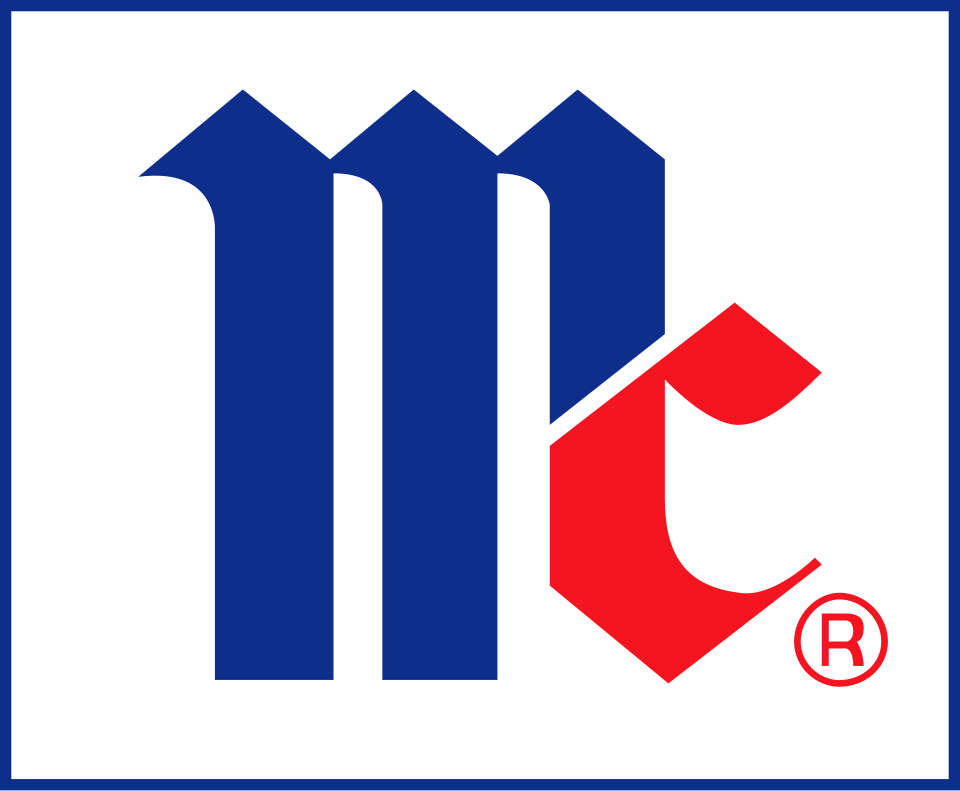

McCormick & Company
McCormick & Company는 향신료, 조미 혼합물, 소스류와 기타 향미 제품을 제조하고 유통하는 미국 식품 기업이다. 소매점과 식품 제조사, 외식 사업체에 제품을 공급한다.
최종 업데이트

McCormick & Company는 어떤 브랜드인가
McCormick & Company는 향신료와 각종 향미 제품을 제조하고 마케팅하며 유통하는 식품 기업이다. 주요 고객은 소매점, 식품 제조사와 외식 사업체이며 제품은 여러 국가에서 판매된다.
매출을 기준으로 세계 최대 향신료 및 관련 식품 생산업체이다. Fortune 500에 포함된 기업으로 세계에서 약 14,000명을 고용한다.
2020년 연간 매출은 $5.6 billion이며, 2018년 3분기에 본사를 Sparks에서 메릴랜드주 Hunt Valley로 이전했다.
McCormick & Company는 어떻게 시작되고 성장했나
Willoughby M. McCormick이 1889년 볼티모어의 방 한 칸과 지하실에서 사업을 시작했다.
그는 루트비어, 향미 추출물, 과일 시럽과 주스를 방문 판매했으며, 7년 뒤 F.G. Emmett Spice Company를 인수해 향신료 산업에 진입했다.
Willoughby와 동생 Roberdeau는 1903년 메인주에서 회사를 법인화했고 1915년 메릴랜드주에서 다시 법인화했다. 회사는 1947년 A.
Schilling & Company를 인수하며 미국 전역에 유통할 기반을 마련했다.
McCormick & Company의 브랜드 아이덴티티는 무엇인가
향신료를 중심으로 소매, 식품 제조와 외식 시장을 함께 공급하며 매출 기준 세계 최대 향신료 및 관련 식품 생산업체라는 점이 특징이다.
McCormick & Company의 대표 제품과 서비스는 무엇인가
회사는 향신료, 조미 혼합물, 소스류와 기타 향미 제품을 제조하고 판매한다. 초기 제품에는 루트비어, 향미 추출물, 과일 시럽과 주스가 포함됐으며 이후 향신료를 핵심 사업으로 확장했다.
제품은 소매 유통뿐 아니라 식품 제조사와 외식 사업체에도 공급한다. 인수를 통해 냉동식품, 특수 향미료와 색소, 케이크 장식 제품 등의 분야에도 진출했다.
McCormick & Company는 지금 어떤 상태인가
회사는 세계에서 약 14,000명을 고용하며 여러 국가에 제품을 공급한다. 2018년 3분기에 본사를 Sparks에서 메릴랜드주 Hunt Valley로 이전했다.
2020년 연간 매출은 $5.6 billion이며 Fortune 500에 포함된 기업이다.
McCormick & Company 로고는 어떻게 변해왔나
자주 묻는 질문
McCormick & Company는 어느 나라 브랜드인가요?
McCormick & Company는 미국의 식음료 브랜드입니다.
McCormick & Company의 브랜드 아이덴티티는 무엇인가요?
향신료를 중심으로 소매, 식품 제조와 외식 시장을 함께 공급하며 매출 기준 세계 최대 향신료 및 관련 식품 생산업체라는 점이 특징이다.
McCormick & Company의 대표 제품은 무엇인가요?
회사는 향신료, 조미 혼합물, 소스류와 기타 향미 제품을 제조하고 판매한다.
McCormick & Company는 현재 어떤 상태인가요?
회사는 세계에서 약 14,000명을 고용하며 여러 국가에 제품을 공급한다.
McCormick & Company의 본사는 어디에 있나요?
McCormick & Company의 본사는 Sparks에 있습니다(위키데이터 기준).
McCormick & Company의 공식 웹사이트는 어디인가요?
McCormick & Company의 공식 웹사이트는 http://www.mccormickcorporation.com 입니다.
출처와 검증
McCormick & Company 관련 참고: 공식 웹사이트 · 위키데이터 Q1915049 · 영어 위키백과. 브랜드명은 한글과 원어를 함께 표기하되 데이터에 없는 표기는 만들지 않습니다. 기원 국가·설립연도는 검수된 정의문에서 확인된 값을 우선하고, 없을 때만 공식 웹사이트 URL이 일치하는 위키데이터 개체의 값을 씁니다. 위키데이터 값은 2026-09-12 기준입니다.